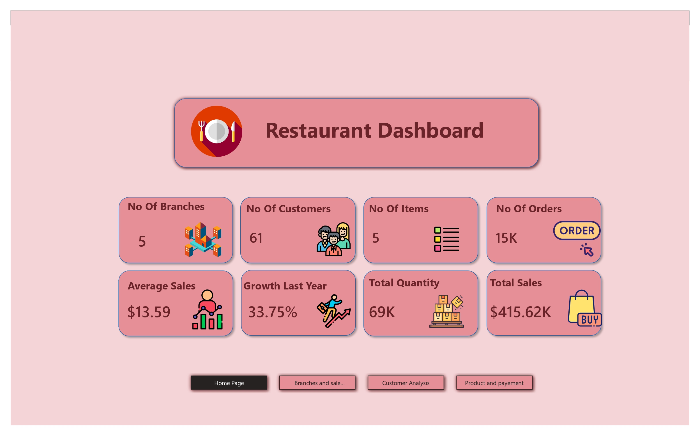
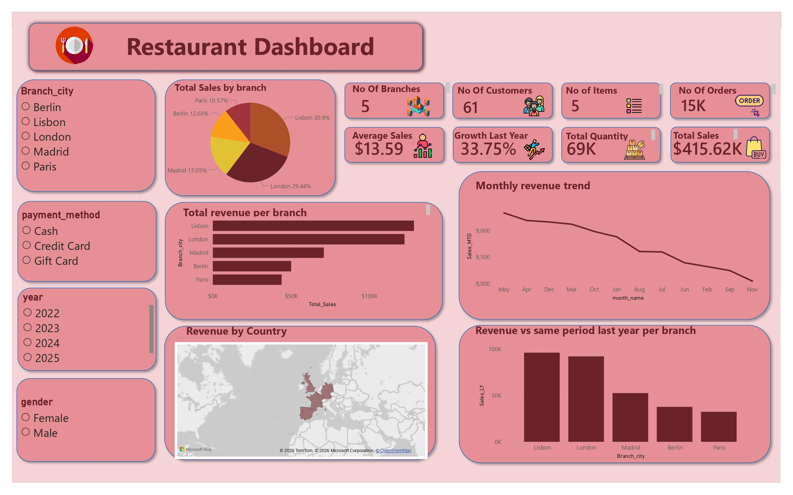
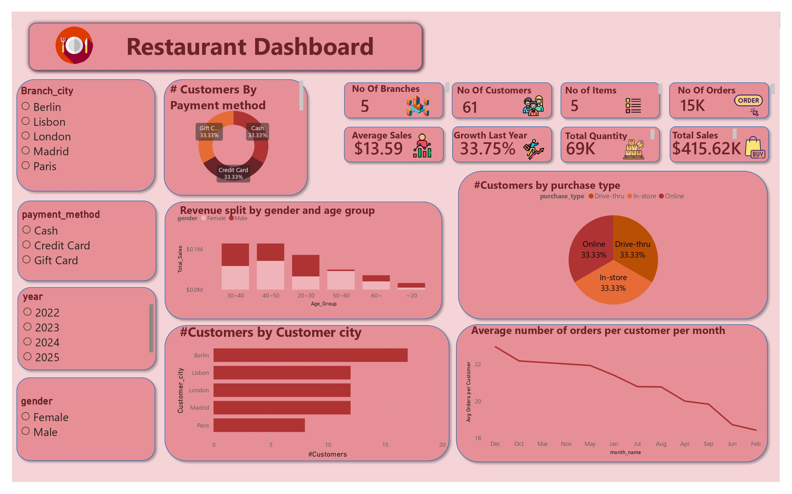
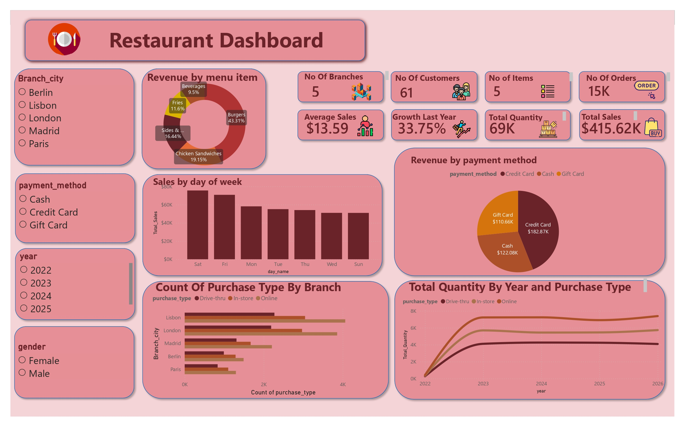
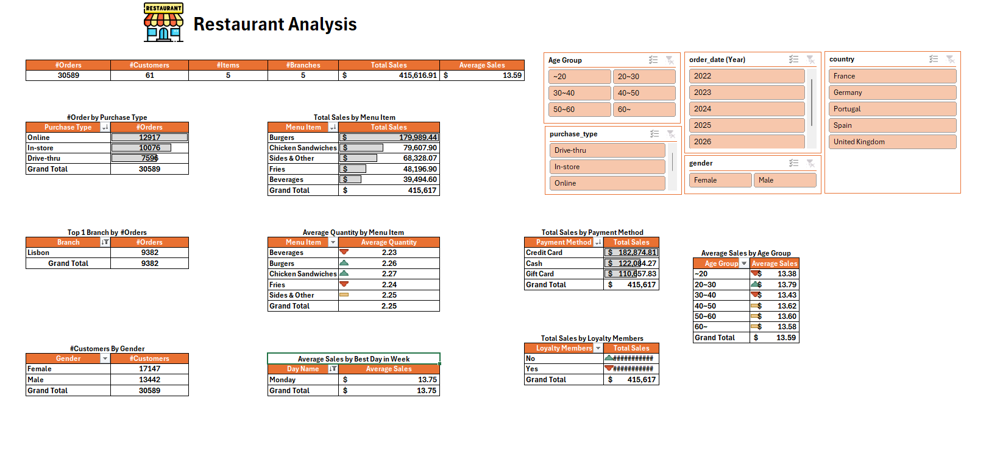
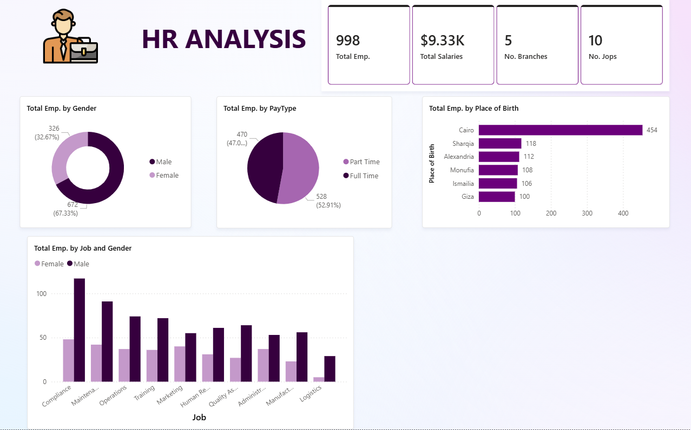
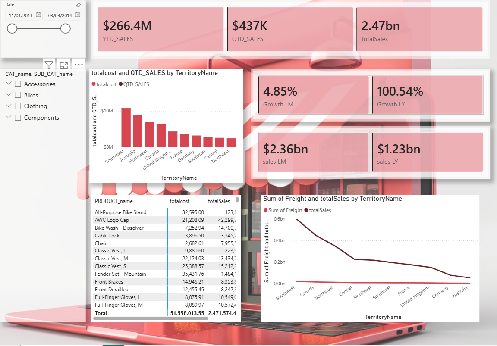
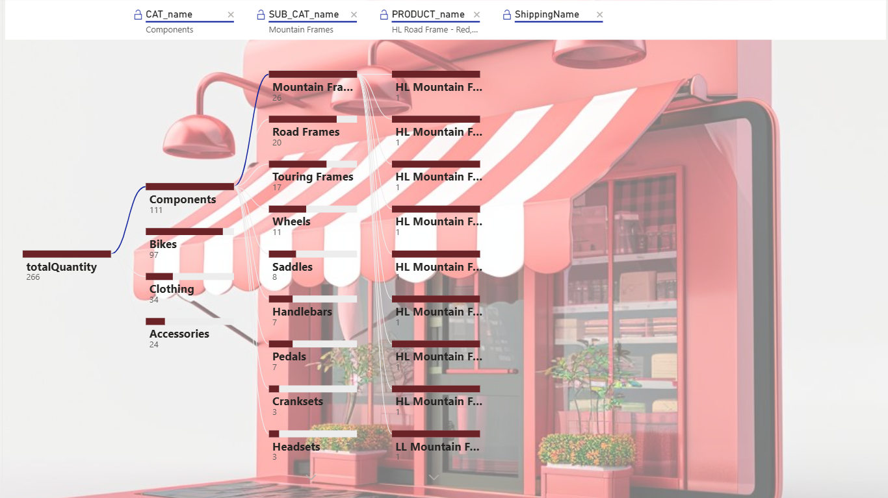
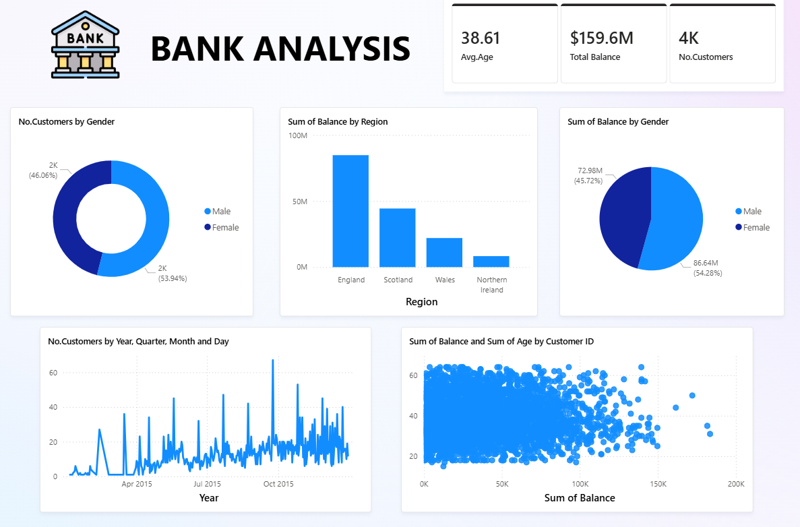
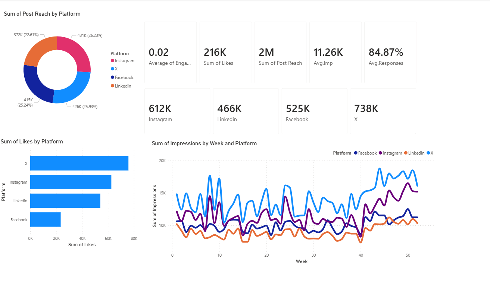

Electrical Power Engineering student at Alexandria University with hands-on experience in data analysis,
data cleaning, SQL querying, Excel dashboards, Power BI reports, Tableau visualizations, and Python-based analysis.
I turn raw data into clear insights that support better business decisions.
I am a third-year Electrical Power Engineering student at Alexandria University with a strong interest in data analysis and business intelligence.
Who I Am
I am building a practical data analysis profile by working on real-world style projects that cover the complete analysis cycle:
understanding the problem, exploring the data, cleaning data issues, writing queries, building dashboards, and presenting insights.
My Data Analysis Track
During the data analysis track, I worked across multiple tools including Excel, Power BI, Tableau, SQL, and Python.
I focused heavily on data cleaning, data preparation, KPI creation, visualization, and storytelling with data.
What Makes Me Different
My unique value is combining an engineering mindset with a complete data analysis workflow,
from raw data to clear business insights.
My USP
Engineering Mindset + Full Data Workflow
I do not only build dashboards. I understand the business question, clean and prepare the data,
analyze it using SQL and Python, build clear Excel and Power BI reports, and explain the final
insights in a simple way that supports decision-making.
01
What Customers Want
Businesses need someone who can understand the problem, clean messy data, analyze it correctly,
and present insights in a simple dashboard or report that helps them make better decisions.
02
What I Do Well
I work across the full data workflow: Excel analysis, SQL querying, Python EDA, data cleaning,
KPI building, Power BI dashboards, and business storytelling.
03
What Competitors Do Well
Many beginners can use one tool or create charts, but not all of them can connect the full process
from raw data to validated insights and clear business recommendations.
Skills & Tools
Technical tools and analysis skills used across my projects.
Tools
ExcelPower BISQLPythonPandasNumPyMatplotlib
Data Analysis Skills
Data cleaning and handling missing, duplicate, and inconsistent values
Exploratory Data Analysis
SQL joins, aggregations, grouping, filtering, and window functions
Dashboard design and KPI reporting
Business questions analysis and insight generation
Data storytelling and presentation
Projects
Selected projects that show my full data workflow: Excel analysis, SQL querying, Python EDA, Power BI dashboards, machine learning, KPI design, and business insight presentation.
1. Restaurant Data Analysis — NTI Final Project
Built a complete restaurant analysis project across Excel, SQL, Python EDA, and Power BI.
The project started from understanding and preparing the data, then answering business questions,
building pivot analysis, and finally designing interactive dashboards for decision-making.
Used SQL to query, validate, and analyze restaurant business data
Performed Python EDA to explore patterns, clean data, and understand relationships
Created Excel pivot tables, slicers, and KPI summaries
Designed Power BI dashboard pages for sales, customers, branches, products, and payments
ExcelSQLPython EDAPower BI
2. BikeStores SQL Analysis — NTI Final Project
Worked on the BikeStores relational database using SQL Server to answer real business questions
about customers, orders, sales revenue, stores, staff, brands, categories, and product performance.
Queried sales and production schemas using SQL Server
Used JOIN, GROUP BY, HAVING, filtering, aggregations, and ordering
Analyzed orders, customers, stores, staff, brands, categories, and products
Extracted business insights from sales revenue and order status data
SQLSQL ServerBikeStores DBBusiness Analysis
4. HR Data Analysis Dashboard
Built an HR analytics dashboard to summarize workforce structure, salaries, branches, jobs,
gender distribution, pay type, place of birth, and job distribution by gender.
Created employee and salary KPIs
Analyzed gender, pay type, jobs, and branches
Built a clean HR dashboard for business understanding
Power BIHR AnalyticsDashboard
3. BikeStores Data Analysis Dashboard
Built a Power BI dashboard for BikeStores sales performance, combining KPI tracking, territory comparison,
product hierarchy analysis, freight analysis, and decomposition tree exploration.
Analyzed YTD, QTD, and total sales KPIs
Compared sales and freight by territory
Used decomposition tree for product/category analysis
Power BISales AnalysisProducts
5. Bank Analysis Dashboard
Created a banking analysis dashboard to understand customer demographics, total balances,
regional performance, gender distribution, time trends, and the relationship between balance and age.
Created customer, balance, and age KPIs
Analyzed customers and balance by gender and region
Visualized customer activity and balance patterns
Power BIBankingCustomer Analysis
6. Marketing Platforms Analysis Dashboard
Designed a marketing analytics dashboard comparing Instagram, X, Facebook, and LinkedIn performance using
reach, likes, impressions, engagement, response metrics, and weekly trend analysis.
Compared platform reach and likes
Tracked impressions by week and platform
Created KPIs for engagement, responses, and post reach
Power BIMarketing AnalyticsSocial Media
7. DEPI Final Project — Heart Disease Prediction
Built a machine learning project to analyze and predict heart disease using Python.
The project covered data cleaning, exploratory data analysis, feature engineering,
model comparison, optimization, and final model evaluation.
Performed EDA to understand medical features and heart disease patterns
Created feature groups such as AgeGroup and CholGroup
Used SMOTE, scaling, PCA, and GridSearchCV during model development
Compared SVM, XGBoost, Random Forest, and MLP models
Selected optimized SVM RBF as the best final model
PythonEDAMachine LearningScikit-learn
Internships & Training
Practical training programs that strengthened my data analysis, data science, and business intelligence skills.
Ai & Data Science
Ai & Data Science by IBM
Completed a Data Science training track delivered through DEPI in collaboration with IBM,
focusing on Python, data analysis, machine learning concepts, data preparation, and project work.
Provider:Digital Egypt Pioneers Initiative (DEPI) Field:Ai & Data ScienceFocus: Python, Data Analysis, Machine Learning, Data Preparation
Data Analysis
Data Analysis
Completed a practical Data Analysis track at NTI, focused on the real-world data analysis workflow,
including Excel, SQL, Power BI, data cleaning, dashboards, and presenting insights from business data.
Provider: National Telecommunication Institute (NTI)Field: Data AnalysisFocus: Excel, SQL, Power BI, Data Cleaning, Dashboarding
Work Experience
Freelance experience focused on AI data annotation and data quality tasks across different online platforms.
Freelance AI Data Annotator
Worked as a freelancer on multiple platforms in AI data annotation tasks, helping improve datasets used for
training and evaluating machine learning models.
1
Annotated, reviewed, and checked data quality for AI-related tasks.
2
Worked with structured guidelines and maintained consistency across tasks.
3
Gained practical experience in data labeling, evaluation, and accuracy-focused work.
AI Data AnnotationData LabelingQuality ReviewFreelance
AI Annotation Platforms
Freelance Work
Completed annotation and review tasks for AI datasets through different online platforms.
Data Quality Tasks
Review & Validation
Focused on accuracy, consistency, and following task-specific labeling instructions.
AI Training Support
Dataset Preparation
Helped prepare cleaner labeled data that can support model training and evaluation.
Guideline-Based Work
Consistency & Accuracy
Applied detailed instructions and quality standards to deliver consistent annotation results.
My Analysis Workflow
The process I usually follow in data analysis projects.
1. Understand the Problem
Define the business question, required KPIs, and expected outcome.
2. Collect & Explore Data
Inspect columns, data types, missing values, duplicates, and relationships.
3. Clean & Prepare Data
Fix incorrect formats, remove duplicates, handle nulls, and prepare the data model.
4. Analyze & Visualize
Use SQL, Excel, Power BI, Tableau, or Python to create insights and dashboards.
5. Present Insights
Explain results clearly and connect visuals to useful recommendations.
Let's Connect
I am open to data analysis internships, training opportunities, and junior-level projects where I can apply my technical and analytical skills.
Click an icon to contact me directly
Restaurant Data Analysis — NTI Final Project
A complete restaurant data analysis project combining Excel pivot analysis, SQL querying, Python EDA, and Power BI dashboarding.
The project focuses on sales, branches, customers, orders, menu items, payment methods, purchase types, and customer segmentation.
Power BI Dashboard Part
Home page with key restaurant KPIs
Branches and sales analysis
Customer behavior and segmentation
Product, menu item, purchase type, and payment analysis
Excel, SQL & Python Part
Excel pivot tables, slicers, and KPI summary
SQL queries for business questions, validation, and analysis
Python EDA for exploration, cleaning, and understanding patterns
Sales by menu item, payment method, customer segment, and purchase type
Power BI Dashboard Screens

Home Page KPIs

Branches and Sales Analysis

Customer Analysis

Product and Payment Analysis
Excel Pivot Table Analysis

Excel Pivot Tables, KPIs, and Slicers
HR Data Analysis Dashboard
HR dashboard designed to summarize employees, salaries, branches, jobs, gender distribution, pay type,
place of birth, and job distribution by gender.
What I Analyzed
Total employees, salaries, branches, and jobs
Employee distribution by gender
Pay type analysis
Place of birth analysis
Job and gender comparison
Tools & Skills
Power BI dashboard design
KPI cards and charts
Data cleaning and reporting
Business insight presentation
Project Screenshot

HR Analysis Dashboard
BikeStores Data Analysis Dashboard
Dashboard project for BikeStores sales analysis, focusing on KPIs, territory sales, product categories,
freight analysis, and decomposition tree exploration.
Dashboard Insights
YTD, QTD, and total sales KPIs
Total cost and sales by territory
Product and category-level analysis
Freight and sales comparison
Techniques Used
Power BI visuals and slicers
KPIs and trend analysis
Decomposition tree
Product hierarchy analysis
Project Screenshots

Main Sales Dashboard

Product Decomposition Tree
Bank Analysis Dashboard
Banking analysis dashboard focused on customer demographics, total balances, gender distribution,
regional performance, and customer behavior over time.
What I Analyzed
Average age, total balance, and number of customers
Customers by gender
Balance by region and gender
Customer trend over time
Balance and age by customer ID
Skills Used
Power BI dashboarding
Customer analytics
KPI design
Visual storytelling
Project Screenshot

Bank Analysis Dashboard
Marketing Platforms Analysis Dashboard
Marketing dashboard comparing social media platforms including Instagram, X, Facebook, and LinkedIn
using reach, likes, impressions, engagement, and response metrics.
What I Analyzed
Post reach by platform
Likes by platform
Impressions by week and platform
Engagement, responses, likes, and reach KPIs
Skills Used
Marketing analytics
Power BI KPI cards
Platform comparison
Trend analysis and visualization
Project Screenshot

Marketing Platforms Dashboard
BikeStores SQL Analysis — NTI Final Project
This project focused on analyzing the BikeStores database using SQL Server. I used relational database
concepts to answer business questions about customers, orders, sales revenue, stores, staff, brands,
categories, and product performance.
What I Worked On
Explored BikeStores sales and production schemas
Joined customers, orders, order items, stores, staff, brands, categories, and products
Analyzed revenue, order status, product performance, and store performance
Used grouping, filtering, aggregation, and sorting to extract insights
SQL Skills Used
SQL Server
INNER JOIN and relational table analysis
GROUP BY, HAVING, ORDER BY, and aggregate functions
Business questions translation into SQL queries
Data validation and insight extraction
DEPI Final Project — Heart Disease Prediction
This machine learning project analyzes a heart disease dataset through data cleaning,
exploratory data analysis, visualization, model development, optimization, and evaluation.
The goal was to connect EDA insights with model performance and select the best final classifier.
Project Workflow
Loaded and explored the heart disease dataset
Checked missing values and duplicate records
Created AgeGroup and CholGroup features
Analyzed features such as age, cholesterol, chest pain, oldpeak, slope, ca, and thalach
Applied scaling, SMOTE, PCA, and GridSearchCV
Models & Result
Compared SVM RBF, XGBoost, Random Forest, and MLP Neural Network
Evaluated models using accuracy, precision, recall, F1-score, ROC-AUC, and confusion matrix